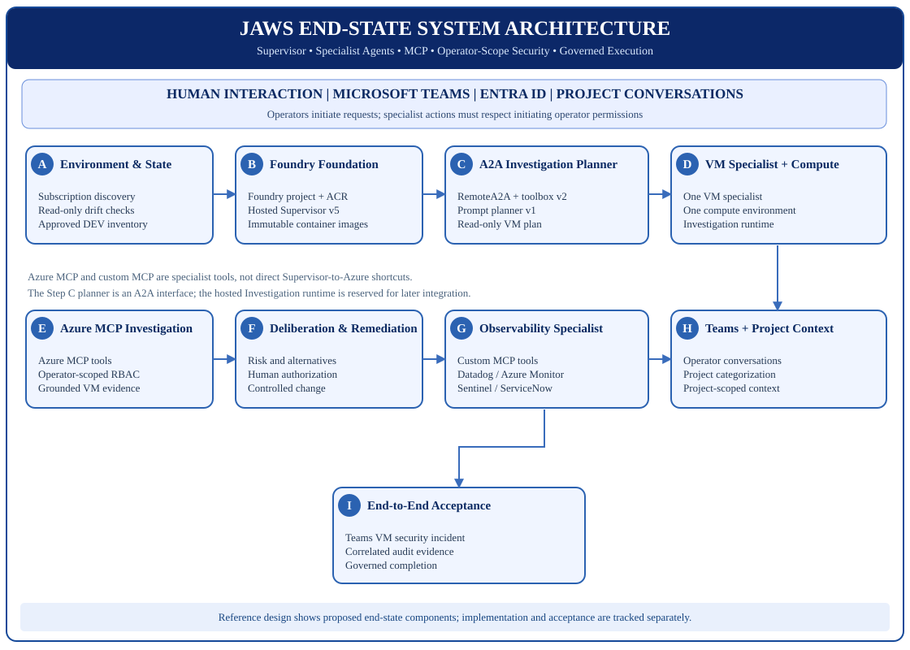
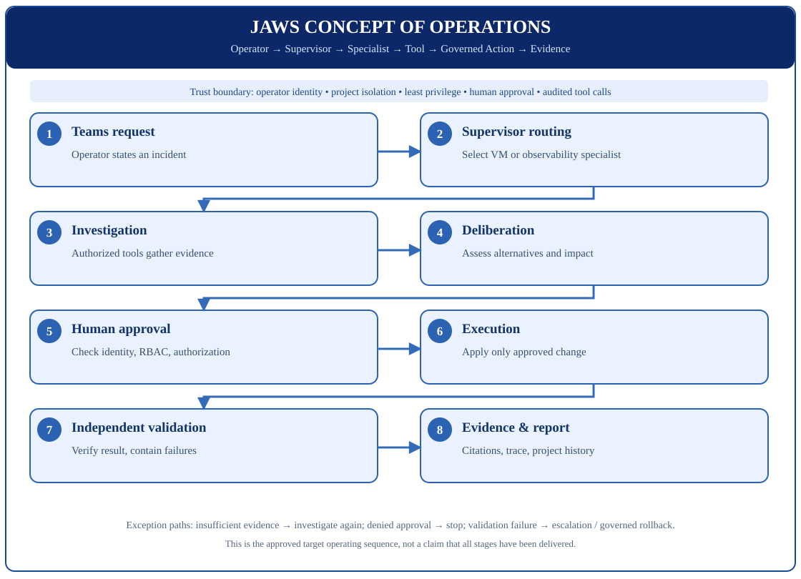

Introduction: Start with your own Azure subscription
JAWS is an Azure-hosted agentic operations platform. Its planned architecture connects Microsoft Teams to a Supervisor and specialist agents, with authorized tools, human approval and evidence-backed outcomes. This tutorial is intended for a new customer or installation engineer with no existing JAWS infrastructure.
Install-Jaws.ps1 supports Discover, Plan, Preflight, Package, Install, and Accept. Step C is Install-JawsThroughStepC.ps1. Step D is Install-JawsStepD.ps1. Steps E–I have installers. A PASS from those commands is not a Teams reply, a live tool call, an executed change, or a live incident. Do not treat a development run, or a PASS from a local stand-in, as a clean customer installation. Each key milestone prints Result, Ready for next step, Next step, and Evidence. Ready for next step: false means stop. The evidence file holds the pass or fail detail.Before using this tutorial
- Have an active Azure subscription and a Microsoft Entra account with appropriate permissions. Resource discovery typically requires scoped Reader access; provisioning generally needs Contributor or scoped equivalent, separate role-assignment privileges and applicable Foundry access.
- Install PowerShell 7, Git and Azure CLI. For local builds/tests, also install WSL 2, Docker Desktop (Linux containers), .NET SDK 10 and Pester 5.
- Read Quick Start for official download links and prerequisite verification and the complete prerequisite specification.
Step A begins with the full local Git clone walkthrough below. Use the approved release branch or tag when one is published.
System Prerequisites: Complete Setup Checklist
This guide is for an organization installing JAWS in its own Azure subscription. You do not need an existing JAWS installation, a special development subscription, or a pre-created JAWS resource group. The installer is intended to collect your Azure subscription and deployment choices, assess prerequisites, present a deployment plan, obtain authorization and provision JAWS. Release status: the complete first-time provisioning workflow is not yet implemented. The commands later on this page are limited to currently supported discovery, planning, packaging or existing-environment validation; they are not substitutes for a new installation.
For detailed workstation configuration see System Prerequisites. For design and acceptance requirements see Implementation Roadmap and Microsoft References & Acceptance Criteria.
Hardware and operating system
- Windows 11 workstation with hardware virtualization enabled. Development workstation recommendation: 32 GB RAM / 1 TB SSD, especially for Docker Desktop, WSL 2 and .NET builds. The repository does not establish an absolute minimum RAM/disk requirement for that workstation.
- Datadog Agent host, only when Datadog is configured. One existing Azure virtual machine in the same subscription, the environment resource group, and the environment location. For the current test that is subscription
c52f597b-7753-45b4-a764-67e290dcfd5e, resource grouprg-aiops-lab-test2, and locationeastus. A new environment that keeps the generated resource group usesrg-jaws-<environment>and the-Locationpassed to Plan. Minimum size is 2 vCPU and 8 GiB RAM (Standard_D2s_v3), Windows 11 or Windows Server 2016 or later, with 4 GiB free disk. The Datadog Agent must be installed, configured for the site and API key you will enter, and thedatadogagentservice must be Running. JAWS does not create the virtual machine and does not install the Agent.jaws-stepb-testinrg-jaws-stepb-testis the operator machine and is not this host. Skip Datadog when this host is not part of the install. Full table and Agent install steps: System Prerequisites. - Internet access to GitHub, Microsoft package downloads, Azure management endpoints, Microsoft Foundry and the authorized container registry.
Install checklist and official downloads
| Prerequisite | Required for | Official download or setup | Verify in PowerShell 7 |
|---|---|---|---|
| PowerShell 7 | All installer steps | Microsoft: Install PowerShell on Windows | $PSVersionTable.PSVersion (major 7) |
| Git for Windows | Source checkout / updates | Git official downloads | git --version |
| Azure CLI | Azure authentication, discovery and checks | Microsoft: Install Azure CLI | az version |
| WSL 2 | Docker Linux container builds, developer/tester workstation | Microsoft: Install WSL | wsl --status and wsl --list --verbose (version 2) |
| Docker Desktop (WSL 2 backend; Linux containers) | Optional local -Mode Package -BuildContainer and developer checks. Step B Install does not use Docker. | Docker Desktop for Windows · WSL 2 backend configuration | docker version; docker info --format '{{.OSType}}/{{.Architecture}}' (Linux) |
| .NET SDK 10 | Agent code build/test and container development | Microsoft: .NET 10 SDK | dotnet --list-sdks (10.x) |
| Pester 5.x | Developer / Tester acceptance tests | Pester installation guide · PowerShell Gallery | Get-Module Pester -ListAvailable (5.x installed) |
| VS Code (recommended) | Developer / Tester editing and integrated PowerShell terminal | VS Code download | code --version, if PATH-integrated |
Scope: For a first-time installation engineer, prepare the full build-and-deployment toolchain, including WSL 2, Docker Desktop, and .NET SDK 10 when compiling and packaging hosted agents. Pester 5 is required when performing the automated acceptance tests. Read-only operators verifying an existing installation may not require those developer tools. WSL 2, Docker, .NET SDK, and Pester become required for a local container check or source tests. Step B Install builds the Supervisor image with az acr build and does not need them. Do not silently impose a developer workstation on ordinary operators.
Install Pester for developer / tester validation
Install-Module -Name Pester -MinimumVersion 5.0.0 -MaximumVersion 5.99 -Scope CurrentUser -Force -SkipPublisherCheck
Import-Module Pester -MinimumVersion 5.0.0 -Force
Get-Module Pester | Select-Object Name,VersionRun in PowerShell 7; follow organizational package trust and execution policies. If package repository prompts appear, verify the publisher before proceeding.
Azure subscription, permissions, and readiness
Bring your own active Azure subscription. JAWS must not require a pre-existing JAWS deployment, a development subscription, or a fixed subscription ID. The intended installer workflow must ask the operator to select an accessible subscription and choose or create a target resource group. Current release limitation: the available installer does not yet provision a complete new installation; implementing this is a release-blocking requirement for customer installation readiness.
| Requirement | Minimum practical access or readiness | Why |
|---|---|---|
| Azure subscription | Active subscription in the intended Microsoft Entra tenant; resource providers, regions, policies, quota and billing allow intended JAWS services. | Foundry, agent hosting, model deployment, ACR, Key Vault and observability resources have location/quota/policy prerequisites. |
| Subscription discovery | Sign-in permitted; Reader on the target scope for read-only resource discovery. Additional Foundry read/data-plane rights may be necessary for agent inspection. | List accessible subscriptions, current resources and configuration without writing changes. |
| Resource creation | Contributor at a pre-created resource group, or at subscription scope if the installer must create the resource group. Use narrower custom roles where the organization provides them. | Create and manage cloud resources. Contributor alone cannot assign Azure RBAC roles. |
| RBAC and agent identities | Role Based Access Control Administrator or another role with Microsoft.Authorization/roleAssignments/write at the required scope, preferably limited by conditions. A separate authorized administrator may perform this step. | Assign least-privilege roles to hosted agents and other managed identities; avoid unconditional subscription Owner. |
| Microsoft Foundry | Foundry resource/project creation permission, for example Foundry Account Owner or Foundry Owner at an applicable scope, plus the relevant project roles for hosted-agent management. | Manage Foundry resources, projects, model deployments, agents and agent tooling. Management access and data-plane permissions differ. |
| Provider / capacity validation | Required providers registered or a permitted registration path; chosen Azure region supports required Foundry model and agent-hosting capabilities; quota and spending limits sufficient. | Prevent partial installations caused by unsupported services, regional restrictions or zero quota. |
| Enterprise controls | Subscription policies permit approved Azure resources, networking/private endpoints where configured, identity assignments, registry image pulls, logging and monitoring. | Ensure JAWS can operate within organizational security and governance rules. |
Microsoft sources: Azure RBAC, Privileged built-in roles, Foundry RBAC, Foundry project creation, and Azure resource providers.
PowerShell policy and source trust
Review Get-ExecutionPolicy -List before running downloaded PowerShell scripts. Respect MachinePolicy/UserPolicy; do not permanently bypass them. See Microsoft execution-policy guidance. Docker uses WSL 2 Linux containers, and hosted images target linux/amd64; Docker is not necessary for read-only inventory checks.
Next: Follow Step A below to clone JAWS and select your Azure subscription. Do not use a pre-existing DEV state file for a new installation.
Full build / container preflight (developer / tester)
pwsh -NoProfile -File .\installer\Test-JawsPrerequisites.ps1 -RequireContainerBuild
Invoke-Pester .\tests\installer\ -Output Detailed
dotnet run --project tests/Jaws.FirstAgent.TestsExpected: prerequisite checks succeed, Pester and .NET tests pass, and Docker reports Linux. These are developer/tester validation commands; do not interpret them as cloud deployment or Step C live acceptance. Consult the Developer/Tester Guide and full prerequisite specification for environment-specific troubleshooting.
End-State System Architecture
The reference diagram describes the intended final system independently of what has been installed. The Supervisor routes specialist work; it does not call Azure services directly. The VM Specialist owns one compute environment, while the Observability Specialist uses shared compute through a custom MCP integration boundary.



Security and execution boundaries
Operator identity, least-privilege RBAC, managed identities, project isolation and approval gates are cross-cutting requirements. The Step C prompt planner is an A2A callee, not proof of a running VM investigation workflow. Refer to the approved roadmap.
Concept of Operations
An operator requests assistance, the Supervisor delegates work to an appropriate specialist, authorized tools gather evidence, the specialist evaluates options, a person authorizes applicable changes, and the system executes, validates and reports results. When evidence is insufficient or approval is denied, the workflow must stop or return to investigation safely.
The customer boundary keeps every specialist inside the customer virtual network. The Supervisor is the only agent the operator calls. Until Teams is installed, that call is the Foundry responses endpoint. Foundry-to-Foundry delegation uses services.ai.azure.com, AgenticIdentityToken, and audience https://ai.azure.com. On a FedRAMP Moderate account that name resolves to a private endpoint. The account is created with public network access disabled, a private endpoint, private DNS, and agent injection. The virtual-machine specialist and the observability specialist are reached as private MCP or OpenAPI through the delegated subnet. Step B Install requests the ServiceNow login URL, username, and password, and the Datadog parameters, and stores supplied values as Key Vault secrets. The generated install config records the secret names and a FedRAMP Moderate row for every Azure resource. The Datadog host must be a virtual machine in that environment's subscription, resource group, and location, with the Datadog Agent installed and the datadogagent service Running. The virtual-machine round trip uses the Foundry responses path. Step C's callee is the prompt planner. Hosted-agent A2A SendMessage is unsupported. The JAWS browser is an internal OpenAPI Container App. Foundry's built-in browser tool is unsupported under network isolation.
The next functional test creates a public-egress Foundry account with no networkInjections, the same shape as the dev account, and leaves the A2A target on services.ai.azure.com. That test proves the delegation. It leaves the FedRAMP Moderate criterion open, and Customer installation accepted stays false. The private account is a separate Step B run with -NetworkProfile Private. Install-JawsFoundryPrivateNetwork.ps1 is deprecated because it leaves public network access enabled.



Important: The complete ConOps is a design target. Steps A–C do not constitute a working Teams incident-to-remediation workflow. A functional pass on the public-egress account is the restart test. FedRAMP Moderate acceptance is the private-from-create account described in the implementation roadmap.
Implementation Roadmap: Steps A–I
Each section distinguishes purpose, source, commands, expected results, and acceptance criteria. No command will be invented for an unimplemented stage.
| Step | Milestone | Current status | Value proposition |
|---|---|---|---|
| A | Discovery & Reconciliation | Greenfield Discover implemented; fresh-subscription receipt not recorded | Verify Azure identity, inventory resources, and reconcile a verified existing JAWS state without writes. |
| B | Foundry Foundation & Packaging | Acceptance command re-reads Azure; fresh-subscription result not recorded | Validate deployment plan, resource readiness, immutable image packaging, Foundry project and model dependencies. |
| C | Supervisor → Investigation Planner A2A | Accepted in existing DEV. Step B environment path implemented; fresh-subscription receipt not recorded | Validate hosted Supervisor delegation to the prompt planner. A Step B environment reads that installation receipt. |
| D | VM Specialist & Compute | Installer implemented; fresh-subscription receipt not recorded | JSON catalog and one hosted VM specialist. Accept continues at Step E Validate. |
| E | Teams channel | Installer implemented; Teams reply not recorded | Publish the Supervisor to Teams so the operator can test communication. |
| F | Observability agent on Azure MCP | Prompt agent created; live query not claimed | One prompt agent for Azure Monitor and Microsoft Defender. |
| G | Datadog and ServiceNow | Manifest recorded; server not deployed | The same observability agent gains a second MCP server. |
| H | VM investigation and one approved change | Grant recorded; change not executed | Machine evidence and one write behind approval. |
| I | One incident | Receipt chain only | Checks E–H. A live incident is not recorded. |
Detailed implementation roadmap with Microsoft technical sources · Current implementation status and diagrams
Step A: Azure Discovery and Reconciliation
Value proposition: Establish which Azure resources are visible to your identity and produce a read-only baseline before JAWS changes anything. A new, empty subscription is a valid result.
A1. Discover an empty subscription
git clone --branch main https://github.com/The-John-Charitable-Trust/Jaws.git Set-Location .\Jaws az login az account set --subscription "<your-subscription-id>" .\installer\Install-Jaws.ps1 -Mode Discover -NonInteractive -EnvironmentName your-environment -ResourceGroupName rg-jaws-your-environment -Location eastus .\installer\Test-JawsStepA.ps1 -ReportPath .\installer\.local\jaws-step-a-discovery.your-environment.generated.json
Expected result: STEP-A DISCOVERY PASS, Discovery: Greenfield, Subscription source: AzureCli, State file required: false, State file written: false, Azure writes: 0, and Prepared for Step B: true. An empty subscription prints Resource groups: 0 and Resources: 0. The test script also prints Live Azure read: false. Receipt: installer/.local/jaws-step-a-discovery.your-environment.generated.json. No file is added under installer/config/. JAWS-AUTH-001 means Azure CLI is not signed in.
A2. Reconcile only if JAWS already exists
.\installer\Install-Jaws.ps1 -Mode Discover -EnvironmentName dev
Expected result: The dev project's tenant scan and target comparison are printed, with Azure writes: 0. For another installation, pass that installation's own -StateFile. A missing file stops at JAWS-STATE-003. Discover does not invent a state file.
Expected results for completion
STEP-A DISCOVERY PASS from the signed-in subscription, including an empty inventory, and Prepared for Step B: true. Existing dev project: state-first comparison, gold-copy state unchanged. Greenfield Step A is not accepted until a real subscription prints the pass line.Acceptance criteria
- A-00: Clone of
mainand the installer file. - A-01: Receipt names the signed-in subscription.
- A-02: Resource counts are printed. Empty is valid.
- A-03: Existing state is reconciled only when that file exists.
- A-04:
Azure writes: 0and no new config state file. - A-05: Discovery receipt retained.
- A-06: Greenfield Step A is not accepted without a fresh-subscription pass.
- A-07, FedRAMP Moderate: Discovery creates no resource and records any inventoried Foundry account, Key Vault, registry, storage account, or container app that is publicly reachable.
Source and tests: Install-Jaws.ps1 · Step A walkthrough · Microsoft references & acceptance.
JAWS implementation code: PowerShell discovery
The following is a verbatim excerpt from installer/modules/StepADiscovery.psm1, source lines 19–35. This is not a standalone executable script. View the complete Step A source-code walkthrough for additional real JAWS PowerShell excerpts, source identifiers, and file-to-architecture mapping. No Python code has been added because JAWS does not implement this step in Python.
function Invoke-JawsStepAGreenfieldDiscovery {
[CmdletBinding()]
param(
[Parameter(Mandatory)][string]$EnvironmentName,
[string]$SubscriptionId,
[string]$ResourceGroupName,
[string]$Location,
[Parameter(Mandatory)][string]$InstallerRoot,
[switch]$NonInteractive
)
Import-Module (Join-Path $PSScriptRoot 'AzurePreflight.psm1') -Force
$devState = Join-Path $InstallerRoot 'config/jaws-installation-state.dev.json'
$devBefore = Get-Content -LiteralPath $devState -Raw
$context = Get-JawsAuthorizedSubscriptions -NonInteractive:$NonInteractive
$cliId = [string]$context.Account.id
if ($SubscriptionId -and $SubscriptionId -ine $cliId) {
throw 'JAWS-AUTH-007: -SubscriptionId does not match the Azure CLI account. Run az account set. No resources were created.'Uninstall to stop charges or start a new install
Discover creates no Azure resources and no charges. After Step B, or any later step, run this command to delete the whole environment, stop its Azure charges, and start a new complete install of the same names. It refuses dev. Uninstall details.
.\installer\Uninstall-Jaws.ps1 -EnvironmentName your-environment -AcknowledgeJawsUninstall
Step B: Foundry Foundation and Packaging
Value proposition: After approval, create a Foundry account, project, model deployment, Key Vault, registry, project identity pull role, and hosted Supervisor version 1 in the signed-in subscription.
B1. Capture the subscription into an install plan
Run this after az account set. Do not edit installer/config/jaws-stage-b-plan.example.json. Its subscription value stays 00000000-0000-0000-0000-000000000000. Pass your own environment, resource group, and region. An interactive Plan asks for the environment name when -EnvironmentName is omitted and offers resource group rg-jaws-<environment> and location eastus. dev and rg-aiops-lab are refused. Pass -FoundryAccountName, -ProjectName, -KeyVaultName, -AcrName, or -SupervisorAgentName to replace a generated name. Leave a parameter off to keep that default. If Preflight finds the Foundry, Key Vault, or registry name taken, it says the name is not available and asks for another. An invalid answer is repeated. -NonInteractive stops and names the switch. The registry parameter is -AcrName. -RegistryName remains the Azure-aware assessment switch.
.\installer\Install-Jaws.ps1 -Mode Plan -NonInteractive -EnvironmentName your-environment -ResourceGroupName rg-jaws-your-environment -Location eastus .\installer\Test-JawsStepB.ps1 -Mode Plan -ReportPath .\installer\.local\jaws-stage-b-plan.your-environment.offline.generated.json
Expected result: Both commands print STEP-B PLAN PASS, the subscription id from az account show, Subscription source: AzureCli, Install authorized: false, Network profile: Public, Key Vault, and a Plan SHA-256. A private plan uses -NetworkProfile Private and prints Network profile: Private. Its digest is different, so a public approval cannot be reused. Azure writes stay 0. The digest binds the names and model. It does not by itself authorize creation or cost. A custom name changes the digest. Preflight and Install use the saved plan, and a different name there stops at JAWS-STEP-B-016. An invalid name stops at JAWS-STEP-B-027. If Azure CLI has no selected subscription, the command stops with JAWS-AUTH-001 or JAWS-PLAN-011.
B1a. Preflight before any Azure write
.\installer\Install-Jaws.ps1 -Mode Preflight -EnvironmentName your-environment -ResourceGroupName rg-jaws-your-environment -Location eastus
Expected result: STEP-B PREFLIGHT PASS, Azure writes: 0, Providers: Registered, Resource write: true, Role assignment: true, Model quota: deferred, Policy simulation: not performed, and Authorized writes: bounded. Contributor without permission to assign AcrPull throws JAWS-STEP-B-026 and creates nothing. Report: installer/.local/jaws-step-b-preflight.your-environment.generated.json. Install runs this same check again before its first write.
B2. Publish the Supervisor host locally
Requires the .NET 10 SDK. This checks the build before install. Install also builds the container itself.
.\installer\Install-Jaws.ps1 -Mode Package .\installer\Test-JawsStepB.ps1 -Mode Package
Expected result: Both commands print:
STEP-B PACKAGE PASS Status: LOCAL_PACKAGE_CREATED Azure writes: 0 Registry push: false Foundry deployment: false Container built: false
The output directory is installer/.local/supervisor/publish and it contains Jaws.Supervisor.Host.dll. The report is installer/.local/jaws-step-b-package.generated.json. This pass does not prove a Foundry project, a model deployment, a registry push, a managed identity, or a running hosted agent.
Optional container build, only when Docker can build linux/amd64:
.\installer\Install-Jaws.ps1 -Mode Package -BuildContainer
Expected result: The same pass lines, with Container built: true and Container tag: jaws-supervisor:local. Registry push and Foundry deployment remain false. Without Docker the command throws JAWS-PACKAGE-005 and is not a pass. Missing .NET SDK throws JAWS-PACKAGE-003. A failed publish throws JAWS-PACKAGE-004.
B3. Install the foundation
Copy the plan SHA from B1. Copy installer/config/jaws.install.example.json to installer/.local/jaws.install.your-environment.json and fill the ServiceNow and Datadog fields you have. This creates billable resources. The Supervisor image is built in the registry with az acr build --platform linux/amd64. Docker Desktop and the local .NET SDK are not required. The digest is read back from the registry and the hosted Supervisor is pinned to it.
Copy-Item .\installer\config\jaws.install.example.json .\installer\.local\jaws.install.your-environment.json .\installer\Install-Jaws.ps1 -Mode Install -EnvironmentName your-environment -ResourceGroupName rg-jaws-your-environment -Location eastus -ApprovedPlanSha256 <plan-sha> -AcknowledgeStepBInstall -InstallConfig .\installer\.local\jaws.install.your-environment.json .\installer\Test-JawsStepB.ps1 -Mode Install
Expected result: Both commands print STEP-B INSTALL PASS, Quota mode: Static, Agent version: 1, Agent status: active, and an image ending in @sha256:. Install also prints FedRAMP Moderate: false and writes installer/.local/jaws-install.your-environment.generated.json with secret names and one row per Azure resource. Secret values stay in Key Vault. Install asks whether to configure ServiceNow and whether to configure Datadog. Answer skip to leave that product unset. Skipping Datadog requires no virtual machine for the Datadog Agent. -SkipServiceNow and -SkipDatadog record the same choice. Test-JawsStepB.ps1 -Mode Install also prints Live Azure read: false. That line scores the receipt file. It is not acceptance. Receipt: installer/.local/jaws-step-b-install.your-environment.generated.json. Without -AcknowledgeStepBInstall the command throws JAWS-STEP-B-010 and creates nothing. A second run does not create a second Foundry account or Supervisor. Add -QuotaMode Dynamic to create the capacity-1 deployment on the regional Standard SKU and turn on dynamic quota. Static stays on GlobalStandard. The plan digest does not change. A GlobalStandard deployment left by an earlier Install is deleted and created again as Standard. A deployment that already matches the chosen mode is not patched again, and a Standard deployment is not deleted on a later Dynamic Install.
B3a. Private profile
The default profile is Public. It keeps the historical plan digest and creates a public-egress account with no networkInjections. A private account is a separate Plan. Run every command on this computer with Azure CLI. There is no jump VM. The first Install creates the virtual network, the private Foundry account, the private endpoint, private DNS, a point-to-site VPN gateway, and a DNS Private Resolver. It then pauses if this computer cannot reach services.ai.azure.com. Connect the Azure VPN Client to jaws-vpn-<compact>, set its DNS server to the printed resolver address, and run the same Install again. The gateway is VpnGw1AZ and bills for each hour it exists. The first Install waits while Azure provisions it, often 30 to 45 minutes. A refusal that public access is disabled pauses the same way as a DNS failure. Key Vault and the registry stay public. FedRAMP Moderate stays false. Install-JawsFoundryPrivateNetwork.ps1 is deprecated.
.\installer\Install-Jaws.ps1 -Mode Plan -NonInteractive -EnvironmentName your-environment -ResourceGroupName rg-jaws-your-environment -Location eastus -NetworkProfile Private .\installer\Install-Jaws.ps1 -Mode Preflight -EnvironmentName your-environment -ResourceGroupName rg-jaws-your-environment -Location eastus .\installer\Install-Jaws.ps1 -Mode Install -EnvironmentName your-environment -ResourceGroupName rg-jaws-your-environment -Location eastus -ApprovedPlanSha256 <plan-sha> -AcknowledgeStepBInstall
Expected first Install: STEP-B INSTALL PAUSED, Private posture: verified, Supervisor created: false, the gateway name, and the resolver address. A public plan digest stops at JAWS-STEP-B-011. An existing account that is not already private stops at JAWS-STEP-B-028 and is left unchanged. After the VPN is connected, the same Install prints STEP-B INSTALL PASS. On 20 October 2026 the only JAWS resources left in subscription c52f597b-7753-45b4-a764-67e290dcfd5e are four soft-deleted Key Vault names. Azure will not purge them early. kv-jaws-lab-test2 and kv-jaws-dev-001 were deleted that evening with purge protection and stay reserved until 18 January 2027. kvjawsaiopslabtest2 and kvjawsaiopslabtest return DeletedVaultPurge, the same refusal recorded in October, and stay reserved until 18 January 2027 and 17 January 2027. Pass -KeyVaultName with a different name. kv-jaws-dev-001 is also reserved and stops at JAWS-STEP-B-017. Accept then runs on this computer. See the Step B walkthrough.
B4. Accept the foundation
Re-read the signed-in subscription. This creates nothing. Use the same environment, resource group, and region as B3.
.\installer\Install-Jaws.ps1 -Mode Accept -EnvironmentName your-environment -ResourceGroupName rg-jaws-your-environment -Location eastus .\installer\Test-JawsStepB.ps1 -Mode Accept
Expected result: Both commands print:
STEP-B ACCEPTANCE PASS Live Azure read: true Azure writes: 0 Foundry provisioning: Succeeded Deployment: Succeeded Registry admin: false AcrPull: true Agent version: 1 Agent status: active Dev state: unchanged FedRAMP Moderate: false
The image line ends in @sha256:. Report: installer/.local/jaws-step-b-acceptance.your-environment.generated.json. A receipt whose resources are not in the signed-in subscription throws JAWS-STEP-B-024.
Expected results for completion
B1 prints STEP-B PLAN PASS with a plan digest. B3 prints STEP-B INSTALL PASS. B4 prints STEP-B ACCEPTANCE PASS with Live Azure read: true and Azure writes: 0. The dev state file is unchanged. On 21 October 2026 B4 printed STEP-B ACCEPTANCE PASS for stepb-accept. Customer installation accepted stays false because FedRAMP criterion B-09 is open.
Acceptance criteria
- B-00:
STEP-B PLAN PASSwith the signed-in subscription,Azure writes: 0, and a plan SHA-256. - B-01: The example blueprint still contains the placeholder subscription.
- B-02:
STEP-B PACKAGE PASSandStatus: LOCAL_PACKAGE_CREATED. - B-05: Install without approval throws
JAWS-STEP-B-010and performs no Azure writes. Preflight failure throwsJAWS-STEP-B-026before the first write. - B-06: Approved install prints
STEP-B INSTALL PASSwith hosted Supervisor version 1 active. - B-07:
dev,rg-aiops-lab, andjaws-installation-state.dev.jsonstay unchanged. - B-08:
STEP-B ACCEPTANCE PASS,Live Azure read: true, andAzure writes: 0after Azure is re-read. - B-09, FedRAMP Moderate: the Foundry account is created with public network access disabled, a private endpoint, private DNS, and injection. Key Vault and the registry use private endpoints. The current public-egress install can pass B-08 and leaves B-09 open.
Sources: Step B written walkthrough · Foundry hosted agent deployment · Code references and acceptance.
JAWS implementation code: PowerShell plan fingerprint
The following is a verbatim excerpt from installer/modules/StepBInstall.psm1, source lines 131–155. This is not a standalone executable script. View the complete Step B source-code walkthrough for additional real JAWS PowerShell, C# and JSON excerpts, source identifiers, and file-to-architecture mapping. No Python code has been added because JAWS does not implement this step in Python.
function Get-JawsStepBScopeSha256 {
[CmdletBinding()]
param([Parameter(Mandatory)]$Scope)
$canonical = @(
'JAWS-STEP-B-SCOPE-1',
[string]$Scope.SubscriptionId.ToLowerInvariant(),
[string]$Scope.ResourceGroupName,
[string]$Scope.Location.ToLowerInvariant(),
[string]$Scope.EnvironmentName,
[string]$Scope.FoundryAccountName,
[string]$Scope.ProjectName,
[string]$Scope.ModelDeploymentName,
[string]$Scope.ModelName,
[string]$Scope.ModelVersion,
[string]$Scope.KeyVaultName,
[string]$Scope.RegistryName,
[string]$Scope.AgentName
)
$profile = 'Public'
if ($null -ne $Scope -and $Scope.PSObject.Properties['NetworkProfile'] -and -not [string]::IsNullOrWhiteSpace([string]$Scope.NetworkProfile)) {
$profile = [string]$Scope.NetworkProfile
}
if ($profile -eq 'Private') { $canonical += 'NetworkProfile=Private' }
return (Get-JawsStepBSha256 -Text ($canonical -join "`n"))
}Uninstall to stop charges or start a new install
This environment now has billable Azure resources. Run this command to delete all of them and stop those charges, or to clear the names before a new complete install. It removes every resource from Steps B, C, and D. It refuses dev. If the Key Vault purge is blocked, choose a different vault name on the next install until the purge date. Uninstall details.
.\installer\Uninstall-Jaws.ps1 -EnvironmentName your-environment -AcknowledgeJawsUninstall
Step C: Supervisor-to-Investigation Planner Delegation
Value proposition: Demonstrate authenticated and auditable A2A planning, where hosted Supervisor v5 delegates to the prompt-based Investigation Planner and receives a read-only investigation plan.
-EnvironmentName check the accepted development project. The hosted Investigation agent was retained there and was not the executed A2A target. For a foundation created by Step B, pass -EnvironmentName. That command reads the Step B receipt, configures the prompt planner and RemoteA2A connection, and does not use the development project. A fresh-subscription acceptance receipt has not been recorded.C1. Read-only environment validation
.\installer\Install-JawsThroughStepC.ps1 -Mode Validate
Expected result: VALIDATED with all non-billable gates passing; no Azure configuration writes. Receipt: installer/.local/jaws-step-c-install.dev.generated.json.
C2. Functional acceptance (billable inference)
.\installer\Install-JawsThroughStepC.ps1 -Mode Validate -AcknowledgeInferenceCharges
Expected result: CLOSED, Acceptance Passed, and TASK_STATE_COMPLETED. Report: installer/.local/jaws-step-c-final-acceptance.dev.generated.json. The acceptance call may use store=false; preserve its local receipt.
C3. Repair only a documented configuration gap
.\installer\Install-JawsThroughStepC.ps1 -Mode Install -AcknowledgeStepCInstall
Expected result: When separately approved and a repairable gate is blocked, the installer applies only the allowed correction, then rechecks it. An already-correct project should require no Azure mutation. See the runbook before running this action.
C4. Step C for the environment created by Step B
Step B must already have written installer/.local/jaws-step-b-install.your-environment.generated.json and installer/.local/jaws-installation-state.your-environment.generated.json. Replace your-environment with the same name used for Step B. The name dev stays on C1–C3.
.\installer\Install-JawsThroughStepC.ps1 -Mode Validate -EnvironmentName your-environment
Expected result: read-only. The receipt is installer/.local/jaws-step-c-install.your-environment.generated.json. A finished non-billable run prints VALIDATED. A missing planner or connection prints BLOCKED and the gate that failed. Azure configuration writes stay at zero. Customer installation accepted: false.
.\installer\Install-JawsThroughStepC.ps1 -Mode Install -EnvironmentName your-environment -AcknowledgeStepCInstall
Expected result: JAWS-INSTALL-C-001 when the acknowledgement is omitted. With the acknowledgement, Install creates only the missing planner, RemoteA2A connection, toolbox version, Foundry Agent Consumer assignment, and one Supervisor version after version 1. Version 1 is not patched. No hosted Investigation agent is created. The connection targets jaws-investigation-planner-your-environment.
.\installer\Install-JawsThroughStepC.ps1 -Mode Validate -EnvironmentName your-environment -AcknowledgeInferenceCharges
Expected result on a live project: CLOSED, Acceptance Passed, and TASK_STATE_COMPLETED. Report: installer/.local/jaws-step-c-final-acceptance.your-environment.generated.json. The call uses store=false and tells the Supervisor to call the Investigation A2A toolbox before answering. A completed response with only reasoning and a message is JAWS-C-ACCEPT-007: TOOL_NOT_INVOKED. An empty toolbox shell, with a default version and no version list, leaves the Supervisor with no tool to call. Step C Install creates the A2A version and reads it back before that gate can pass. A create response without the tool is JAWS-TOOLBOX-011. Re-run Install before Accept. Step C does not rebuild the Supervisor image. That report becomes customer acceptance only when it is produced by a live fresh subscription. An offline stand-in does not meet that bar. A rate-limited response that already contains TOOL_INVOKED_SUCCEEDED and TASK_STATE_COMPLETED passes, and the report keeps the rate-limit error. A model rate limit with no completed Investigation task prints Issue and Action, then stops at JAWS-C-ACCEPT-010 after three tries. It is not JAWS-C-ACCEPT-007. Switch to dynamic quota with Step B Install -QuotaMode Dynamic, or wait for the limit to reset and retry. Capacity stays 1. Dynamic Install uses the regional Standard SKU.
Expected results for completion
Acceptance criteria
- Supervisor image and version detail match approved active, non-draft deployment.
- A2A connection targets the prompt planner on
services.ai.azure.comwithAgenticIdentityTokenand audiencehttps://ai.azure.com. The toolbox shape matches the verified implementation. - Read-only VM investigation plan returns as a completed A2A task through the Supervisor.
- Failure paths do not create unintended releases or privilege assignments.
- Installer test regressions pass and billable inference requires explicit acknowledgment.
- C-02, FedRAMP Moderate: the A2A name resolves to the private endpoint, the connection stores no account key, and no public specialist URL is created. A public-egress
CLOSEDresult leaves this criterion open.
Sources: Operator runbook · Delegation and technical boundaries · Microsoft references and acceptance · accepted Step C PR.
JAWS implementation code: C# hosted Supervisor
The following is a verbatim excerpt from src/Jaws.Supervisor.Host/Program.cs, source lines 75–96. This is not a standalone executable script. View the complete Step C source-code walkthrough for additional real JAWS PowerShell, C# excerpts, source identifiers, and file-to-architecture mapping. No Python code has been added because JAWS does not implement this step in Python.
var builder = WebApplication.CreateBuilder(args);
builder.Services.AddFoundryResponses(supervisor);
// Supported Foundry hosted-toolbox integration (Microsoft Agent Framework).
// Installer must verify toolbox version, identity, RBAC and operator approval
// before it deploys a new Supervisor container with this setting.
if (toolboxNames.Count > 0)
{
builder.Services.AddFoundryToolboxes(credential, toolboxNames.ToArray());
// AddFoundryToolboxes lists tools but does not echo tools/list _meta on tools/call.
// The Foundry proxy rejects that call. This startup pass forwards the listed metadata.
builder.Services.AddHostedService<FoundryToolboxMetadataStartup>();
}
var app = builder.Build();
app.MapGet("/healthz", () => Results.Ok(new {
status = "ready",
component = "jaws-supervisor-host",
agentIntegration = toolboxNames.Count == 0 ? "not-configured" : "toolbox-registered-unverified",
deployment = model
}));
// Foundry hosting library provides the Responses protocol implementation.
app.MapFoundryResponses();
app.Run();Uninstall to stop charges or start a new install
This environment now has billable Azure resources. Run this command to delete all of them and stop those charges, or to clear the names before a new complete install. It removes every resource from Steps B, C, and D. It refuses dev. If the Key Vault purge is blocked, choose a different vault name on the next install until the purge date. Uninstall details.
.\installer\Uninstall-Jaws.ps1 -EnvironmentName your-environment -AcknowledgeJawsUninstall
Step D: VM Specialist & Compute Installer implemented
Purpose and value: One hosted virtual-machine specialist owns one compute environment. The installer writes a versioned JSON catalog. A later prompt specialist is another catalog entry and does not need its own container. The catalog refuses an unknown tool, a phase id, a second compute environment, and a write that has no approval workflow. Outside the dev project, Step D also gives the Supervisor and that specialist a private browser for operator-approved sites. The Investigation prompt planner does not receive it. Step E publishes the Supervisor to Teams. Install does not rebuild the Supervisor image. After Accept, a separate command builds that image, a private-path check opens one session, and a capability check extracts a value only after an operator adds a URL. Those commands also leave Step E closed.
Prerequisite: Step C has printed Result: PASS, Ready for next step: true, and Next step: Step D Validate. The evidence file contains PASS and TASK_STATE_COMPLETED.
D1. Validate the catalog
.\installer\Install-JawsStepD.ps1 -Mode Validate -EnvironmentName your-environment
Expected result:
STEP-D VALIDATE PASS Customer installation accepted: false Azure writes: 0 Result: PASS Ready for next step: true Next step: Step D Install Evidence: ...\installer\.local\jaws-step-d-validate.your-environment.generated.json
A missing Step C acceptance file prints STEP-D VALIDATE FAIL, Result: FAIL, Ready for next step: false, and JAWS-STEP-D-002. The same evidence path holds the message.
D2. Install the specialist and the browser
Outside the dev project this creates jaws-vm-specialist-your-environment from the Step B image and Container App jaws-br-<compact> on an internal-only Container Apps environment. <compact> is the environment name with hyphens removed. For the current test, -EnvironmentName aiops-lab-test2 keeps Foundry account jaws-foundry-aiops-lab-test2 and creates Container App jaws-br-aiopslabtest2. The app is published on that environment's virtual-network load balancer, port 8089, and has no public endpoint. Foundry can call it after the account is created with agent virtual-network injection. The next test uses the public profile. A private account is -NetworkProfile Private on Step B, which pauses for the operator VPN. Install-JawsFoundryPrivateNetwork.ps1 is deprecated. rg-aiops-lab-test2 has been deleted. A new Step B Install writes a new PlanSha256. The bearer token for audience api://jaws-browser is still required. Before it writes the browser Key Vault secrets, it grants the signed-in account Key Vault Secrets Officer on the Step B vault when that assignment is missing. It registers Foundry toolbox jaws-browser-tools and posts one later Supervisor version that names that toolbox. That version keeps the Step B image digest and copies JAWS_INVESTIGATION_TOOLBOX_NAME from the latest Supervisor version. Supervisor version 1 stays active, keeps that digest, and does not receive the browser variable. The dev project binds the existing jaws-investigation-dev and does not post a second agent, a Container App, or a Supervisor version.
.\installer\Install-JawsStepD.ps1 -Mode Install -EnvironmentName your-environment -AcknowledgeStepDInstall
Expected result: STEP-D INSTALL PASS, Result: PASS, Ready for next step: true, and Next step: Step D Accept. Evidence: installer/.local/jaws-step-d-install.your-environment.generated.json. The catalog is installer/.local/jaws-specialist-catalog.your-environment.generated.json. Without -AcknowledgeStepDInstall the command prints Result: FAIL and throws JAWS-STEP-D-001 before Azure. A second Install does not post another agent, rebuild the browser image, or post another Supervisor version. Outside the dev project the console also prints Browser toolbox: jaws-browser-tools, Supervisor image rebuilt: false, and Supervisor version 1 unchanged: true. The receipt records the internal endpoint, toolset version, and credential scope id. The image already in the registry ignores JAWS_BROWSER_TOOLBOX_NAME until Publish-JawsSupervisorBrowserImage.ps1 builds one from this host. Install does not run that build. A passing Install also prints Browser allow-list: empty. No navigation will succeed until an operator adds a URL. when the list is empty. In the dev project the console prints Browser toolbox: not provisioned and Azure writes: 0.
D3. Accept this run
.\installer\Install-JawsStepD.ps1 -Mode Accept -EnvironmentName your-environment
Expected result:
STEP-D ACCEPTANCE PASS Customer installation accepted: false Azure writes: 0 Result: PASS Ready for next step: true Next step: Step E Validate Evidence: ...\installer\.local\jaws-step-d-acceptance.your-environment.generated.json
Accept re-reads the hosted agent. Outside the dev project it also re-reads the Container App, the browser toolbox version, and Supervisor version 1. Ready for next step: true and Next step: Step E Validate are the correct pass for this step. The evidence file sets LiveAzureRead to true, CustomerInstallationAccepted to false, and FreshSubscriptionReceiptArchived to false. A local catalog whose live agent does not match, a public browser ingress, or a browser variable on Supervisor version 1 throws JAWS-STEP-D-024 and prints Result: FAIL. A stub pass is not a fresh-subscription receipt. Accept does not prove a live page load. The image, private-path, and capability commands below are the continuation, and they also leave Customer installation accepted false.
D4. Publish the Supervisor browser image
This builds src/Jaws.Supervisor.Host with az acr build for linux/amd64. It does not use Docker. It posts one Supervisor version after version 1, copies JAWS_INVESTIGATION_TOOLBOX_NAME from the latest version when that variable is set, and sets JAWS_BROWSER_TOOLBOX_NAME. Version 1 stays on the Step B digest and does not receive the browser variable. The dev project is refused.
.\installer\Publish-JawsSupervisorBrowserImage.ps1 -EnvironmentName your-environment -AcknowledgeSupervisorBrowserImage
Expected result: STEP-D BROWSER IMAGE PASS, Supervisor image rebuilt: true, Supervisor version 1 unchanged: true, Customer installation accepted: false, Ready for next step: true, and Next step: Test-JawsBrowserPrivatePath.ps1. Evidence: installer/.local/jaws-step-d-browser-image.your-environment.generated.json. Without the acknowledgement the command throws JAWS-STEP-D-035 and builds nothing. A second run that already has this image prints Azure writes: 0.
D5. Check the private path
One Foundry responses call opens a browser session and closes it. It does not navigate. The call uses the Foundry tool path, which is the path that can reach the internal Container App. If it fails, stop. Do not add a URL or run the capability check.
.\installer\Test-JawsBrowserPrivatePath.ps1 -EnvironmentName your-environment -AcknowledgeBrowserPrivatePath
Expected result: STEP-D PRIVATE PATH PASS, Navigation attempted: false, Customer installation accepted: false, Ready for next step: true, and Next step: Set-JawsBrowserAllowList.ps1, then Test-JawsBrowserCapability.ps1. Evidence: installer/.local/jaws-step-d-browser-private-path.your-environment.generated.json. Running it before the image publish throws JAWS-STEP-D-036. A session that is not opened, or a response that contains browser_unreachable, throws JAWS-STEP-D-040. A CLI stand-in is not a live Foundry receipt.
D6. Allow a site
The allow-list starts empty. There is no seed list, so every navigation is rejected until an operator adds a URL. This command updates Key Vault secret jaws-browser-allow-list. It does not rebuild an image. The dev project is refused.
.\installer\Set-JawsBrowserAllowList.ps1 -Action Add -Url https://portal.contoso.example/reports -EnvironmentName your-environment -AcknowledgeBrowserAllowList
Expected result: Browser allow-list: Add, Azure writes: 1, and Customer installation accepted: false. Without -AcknowledgeBrowserAllowList the command throws JAWS-STEP-D-033 and writes nothing. Remove the same URL with -Action Remove.
D7. Accept the browser capability
This spends model and browser usage. The URL must already be on the allow-list. The prompt navigates to that URL, extracts a value, and tries one URL that is not on the list. A pass still does not open Step E, and it does not claim a live page load, a vault login, or a tenant signature check.
.\installer\Test-JawsBrowserCapability.ps1 -EnvironmentName your-environment -Url https://portal.contoso.example/reports -AcknowledgeBrowserCapability
Expected result:
STEP-D BROWSER CAPABILITY PASS Customer installation accepted: false Azure writes: 0 Result: PASS Ready for next step: true Next step: Step E Validate Evidence: ...\installer\.local\jaws-step-d-browser-capability.your-environment.generated.json
Without the private-path receipt the command throws JAWS-STEP-D-041. A URL that is not on the allow-list throws JAWS-STEP-D-039. A response that lacks EXTRACTED_VALUE or allow_list_rejected throws JAWS-STEP-D-042. Only the virtual-machine specialist may list browser tools; another specialist that lists one throws JAWS-STEP-D-034. A fourth session fails immediately with browser_queue_timeout and is not queued. Details are in the browser runbook.
Acceptance criteria
- D-00: Accept prints
STEP-D ACCEPTANCE PASS,Ready for next step: true, andNext step: Step E Validate. - D-03, FedRAMP Moderate: the browser is the internal OpenAPI app on a Foundry account created private, with a private endpoint and private DNS. No public specialist URL is created. The public-egress run leaves this criterion open.
Refer to the step-specific acceptance register. Offline tests are not a fresh-subscription receipt, and this step does not call Azure MCP.
Uninstall to stop charges or start a new install
This environment now has billable Azure resources. Run this command to delete all of them and stop those charges, or to clear the names before a new complete install. It removes every resource from Steps B, C, and D. It refuses dev. If the Key Vault purge is blocked, choose a different vault name on the next install until the purge date. Uninstall details.
.\installer\Uninstall-Jaws.ps1 -EnvironmentName your-environment -AcknowledgeJawsUninstall
Step E: Teams channel Installer implemented
Purpose and value: The operator can talk to the Supervisor in Teams. Install publishes that Supervisor only, with publishScope Shared. Specialists stay unpublished.
Commands:
.\installer\Install-JawsStepE.ps1 -Mode Validate -EnvironmentName your-environment .\installer\Install-JawsStepE.ps1 -Mode Install -EnvironmentName your-environment -AcknowledgeStepEInstall .\installer\Install-JawsStepE.ps1 -Mode Accept -EnvironmentName your-environment
Expected: STEP-E ACCEPTANCE PASS, Teams reply recorded: false, Specialists published: false, FedRAMP Moderate: false, Customer installation accepted: false, and Next step: Step F Validate. Install without the acknowledgement stops at JAWS-STEP-E-001. dev stops at JAWS-STEP-E-014.
Microsoft references: Publish to Teams and Publish by REST. Walkthrough: STEP-E-TEAMS.md.
Uninstall to stop charges or start a new install
The bot is in the environment resource group. Run this command to delete the whole environment and stop those charges, or before a new complete install. It refuses dev. Uninstall details.
.\installer\Uninstall-Jaws.ps1 -EnvironmentName your-environment -AcknowledgeJawsUninstall
Step F: Observability agent Installer implemented
Purpose and value: One prompt agent on the virtual-machine compute environment reads Azure Monitor and Microsoft Defender through Azure MCP. Those tools leave the virtual-machine specialist.
Commands:
.\installer\Install-JawsStepF.ps1 -Mode Validate -EnvironmentName your-environment .\installer\Install-JawsStepF.ps1 -Mode Install -EnvironmentName your-environment -AcknowledgeStepFInstall .\installer\Install-JawsStepF.ps1 -Mode Accept -EnvironmentName your-environment
Expected: STEP-F ACCEPTANCE PASS, Live tool call: false, Mcp connection written: false, and Next step: Step G Validate. The Azure MCP connection is not attached. Microsoft references: Azure Monitor tools, Microsoft Defender for Cloud, and Foundry MCP. Walkthrough: STEP-F-OBSERVABILITY-AGENT.md.
Uninstall to stop charges or start a new install
Run this command to delete the whole environment and stop those charges, or before a new complete install. It refuses dev. Uninstall details.
.\installer\Uninstall-Jaws.ps1 -EnvironmentName your-environment -AcknowledgeJawsUninstall
Step G: Datadog and ServiceNow Manifest recorded
Purpose and value: The same observability agent gains the custom server jaws-observability. The modules are Datadog and ServiceNow. The tools are read-only.
Commands:
.\installer\Install-JawsStepG.ps1 -Mode Validate -EnvironmentName your-environment .\installer\Install-JawsStepG.ps1 -Mode Install -EnvironmentName your-environment -AcknowledgeStepGInstall .\installer\Install-JawsStepG.ps1 -Mode Accept -EnvironmentName your-environment
Expected: STEP-G ACCEPTANCE PASS, MCP server deployed: false, Live tool call: false, and Next step: Step H Validate. A module outside this build stops at JAWS-STEP-G-008. Secret names stay in STEP-G-OBSERVABILITY.md. Microsoft reference: Foundry MCP.
Uninstall to stop charges or start a new install
Run this command to delete the whole environment and stop those charges, or before a new complete install. It refuses dev. Uninstall details.
.\installer\Uninstall-Jaws.ps1 -EnvironmentName your-environment -AcknowledgeJawsUninstall
Step H: VM change Grant recorded
Purpose and value: The virtual-machine specialist keeps the machine, its identity, its network attachments, and Azure Policy. vm.run-command requires approve-vm-change. Install does not run the command.
Commands:
.\installer\Install-JawsStepH.ps1 -Mode Validate -EnvironmentName your-environment .\installer\Install-JawsStepH.ps1 -Mode Install -EnvironmentName your-environment -AcknowledgeStepHInstall .\installer\Install-JawsStepH.ps1 -Mode Accept -EnvironmentName your-environment
Expected: STEP-H ACCEPTANCE PASS, Change executed: false, and Next step: Step I Validate. Microsoft references: Azure MCP Server tools, Azure RBAC, and Agent Framework workflows. Walkthrough: STEP-H-VM-CHANGE.md.
Uninstall to stop charges or start a new install
Run this command to delete the whole environment and stop those charges, or before a new complete install. It refuses dev. Uninstall details.
.\installer\Uninstall-Jaws.ps1 -EnvironmentName your-environment -AcknowledgeJawsUninstall
Step I: One incident Chain check
Purpose and value: Accept checks the E, F, G, and H receipts and the catalog. It does not run an incident.
Commands:
.\installer\Install-JawsStepI.ps1 -Mode Validate -EnvironmentName your-environment .\installer\Install-JawsStepI.ps1 -Mode Accept -EnvironmentName your-environment
Expected: STEP-I ACCEPTANCE PASS, Live incident: false, Ready for next step: false, and Next step: none. A missing receipt stops at JAWS-STEP-I-002. Walkthrough: STEP-I-INCIDENT.md.
Uninstall to stop charges or start a new install
Run this command to delete the whole environment and stop those charges, or before a new complete install. It refuses dev. Uninstall details.
.\installer\Uninstall-Jaws.ps1 -EnvironmentName your-environment -AcknowledgeJawsUninstall
Microsoft References, Source Code and Acceptance
Each step has a detailed entry with Microsoft Learn/technical references, implementation source, objective acceptance criteria, evidence requirements and a value statement. Use References & Acceptance Criteria as the step-by-step traceability register.
Key sources: Azure Resource Graph, Azure RBAC, Foundry hosting, Foundry A2A, Azure MCP Server.
Release, Security and Test Boundaries
Installation must require explicit approval for Azure writes and billable resources. Never place credentials, tokens, secrets or sensitive customer installation state in GitHub. Preserve existing DEV releases and privileges. Record real test results; unexecuted tests must be marked pending or blocked, never passed.
View implementation status and status diagrams · Read the greenfield installer engineering specification · Developer & Tester Guide.